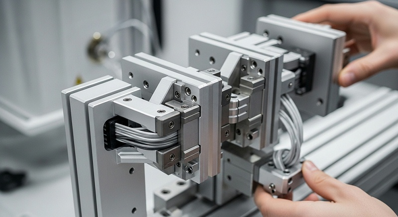
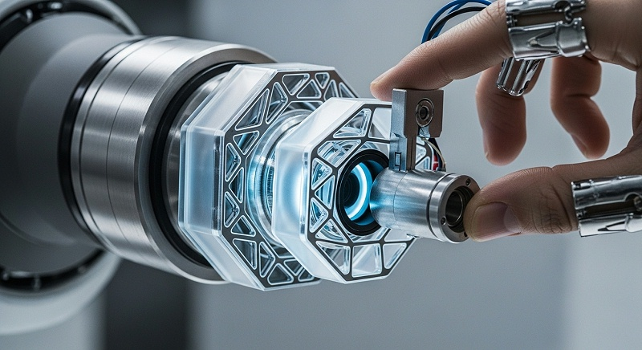
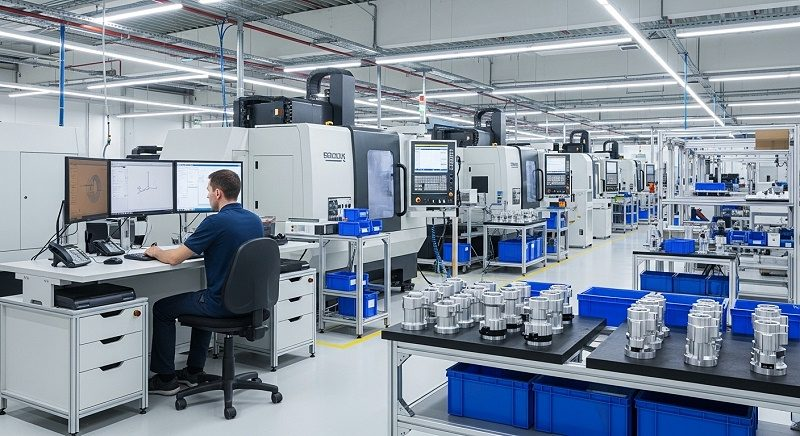
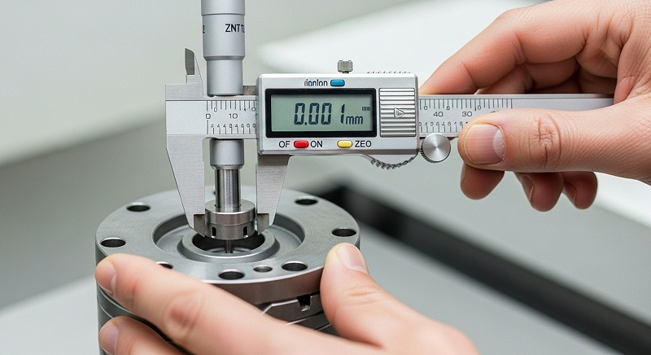
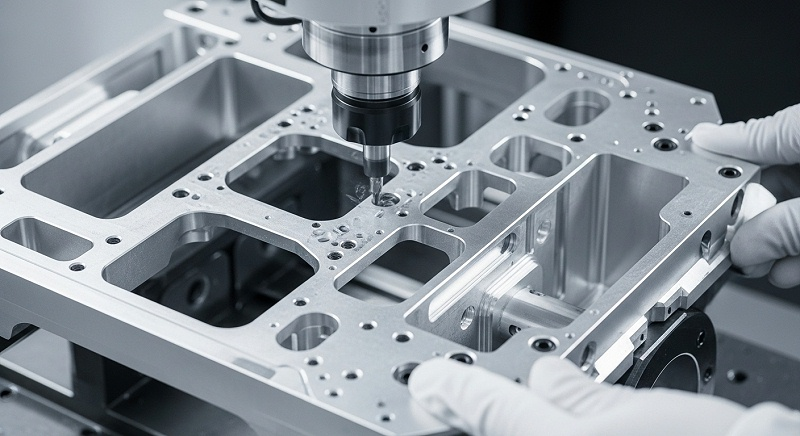

储能设备散热件试产C如何保证精度一致性与批量检测
储能设备散热件在试产阶段翻车，根源往往不是设计不行，而是“图纸上看着能做”和“实际加工出来好用”之间存在落差。伟创业cnc加工在江苏常州对接储能液冷板试产项目时，就碰到过典型的薄壁水冷流道结构：图纸标注流道宽度2.5mm、局部壁厚仅1.2mm、密封面要求Ra0.8，但首件装配时出现干涉，试压直接渗漏。
改模、换料、重新排产，整个开发周期被拖长了一个多月，这个代价比试产加工费本身高出几个量级。
要避开这种坑，核验储能散热件试产CNC加工厂家时就不能只看设备照片和报价单，而要看它用什么装夹方案控制薄壁变形、用什么检测手段判定流道尺寸和密封面真实状态，更要确认报价里到底包含几轮验证、几件首样和哪些可追溯的记录文件。
这篇文章就把这些判断口径、工艺动作和验收边界逐一展开讲清楚。
储能散热件试产要核验有效产能，设备台账说明不了交付能力
评估储能散热件试产CNC加工厂家时，习惯先问一句“你们有多少台加工中心”，这个问题在标准轴类或板类零件上成立，但放到带复杂水冷流道的薄壁散热件场景里，容易得出偏差很大的结论。
储能散热件通常采用铝合金6061-T6或6063-T5挤压坯，内部水冷流道走向复杂，薄壁区域多，还带有若干组密封槽，单个零件加工时间可能在半小时到两小时之间。试产批次往往要二十到五十件才能覆盖装配验证和台架测试需求，这时真正决定交付时间的，不是这家厂总共有多少台设备，而是其中有多少台适合加工薄壁腔体件、能稳定跑出±0.02mm精度、且当前没有被其他订单占满的机器。
伟创业cnc加工在核验放量能力时，会把产能账拆成节拍、稼动率、瓶颈工序、换线损失、良率和备用设备六个维度逐一计算。以浙江一个储能侧板散热件为例，工艺路线涉及粗铣流道、半精加工密封面、精加工安装面、去毛刺与清洗检测，其中密封面精加工是明确瓶颈工序——它要同时控制平面度、平行度和表面粗糙度，设备刚性不足或刀具微量磨损都会直接反映在密封效果上。
单看设备清单，有些厂家放着三十多台加工中心，但能胜任密封面精加工、配有高刚性四轴转台和在线测量功能的可能只有六到八台，再扣除已在产订单占用的部分，实际留给新试产项目的时间窗口非常紧张。
伟创业cnc加工在接单前会做产能匹配评估，要求客户提供图纸、材料牌号、预期试产数量和目标交付节点，据此估算每道工序节拍并对比现有负荷，找出真正的堵点位置。
如果是密封面精加工工序阻塞，就协调错峰排产或调整装夹方案；如果是五轴联动加工复杂流道受限，就确认备用机型和对应操机人员能否顶替。这一步做完才谈报价和交期，否则口头承诺的“十天交付试产件”只是理想值，不具备实际约束力。
[

薄壁变形是散热件试产首道关卡，装夹与应力释放决定成败
储能散热件试产中最常见的失效模式并非单纯尺寸超差，而是松开夹紧力之后零件产生翘曲变形。毛坯装夹时是平的，铣完底面翻面加工正面，压板一松，零件整体拱起，平面度从图纸要求的0.05mm恶化到0.2mm以上，密封面直接报废。
这种失效在壁厚仅1.2mm到2mm的薄壁水冷板件上尤为突出。机理层面看，铝合金毛坯内部存在轧制或挤压残余应力，粗加工去除大量材料后应力重新分布；同时铣削产生的切削热引起局部膨胀，冷却后留下不可逆变形。解决这个问题不能靠操机师傅“手法稳一点”，必须在工艺方案层面系统设计。
伟创业cnc加工对这类零件采用的工艺组合包括三步。重点步是毛坯预处理，铝合金板材先安排去应力时效，让材料内部残余应力提前释放一部分再上机切削，避免加工到一半出现应力翘曲；
第二步是装夹方案切换，薄壁件尽量不用压板多点紧固，优先采用真空吸盘或低熔点合金填充辅助支撑，让零件在加工过程中接近自由状态，减少夹紧应力对精加工结果的影响。
第三步是关键切削参数控制，粗加工阶段留余量0.5mm左右，让应力在中间状态均匀释放；精加工阶段采用较小切深与较高转速组合，叠加微量润滑，将切削热输入控制在较低水平。这套动作在江苏常州一个储能液冷板项目中经受过实际验证。
该项目的零件规格为600×300×18mm液冷板，内部流道宽度4mm、深度12mm，流道底面剩余壁厚只有1.5mm。原工艺方案供应商加工后平面度在0.15mm到0.25mm之间波动，密封测试三处渗漏，无法进入装配验证环节。
伟创业cnc加工接手后重新设计工艺路线，将工序调整为：先粗铣流道面并保留余量，安排去应力处理，再用真空吸盘吸附装夹精加工密封面，成品平面度控制在0.05mm以内，0.6MPa水压保持三十分钟无渗漏。
整个试产周期从客户原计划的四周压缩到十八天，其中包含两轮工艺参数调整和一次首件评审会议。这个案例说明薄壁变形控制的关键在于工序顺序与应力管理，而非单纯依赖设备精度。
水冷流道与密封面精度验收要追问测量口径，报告PASS不等于真实合格
储能散热件验收环节的争议，大多不是零件“有没有做到”，而是“按什么标准量、用什么设备测、在哪个状态下判定”。同一处流道宽度尺寸，使用三坐标接触式探针与使用光学影像仪测量，结果可能相差0.02mm到0.05mm，原因在于探针存在测头半径补偿误差，流道口部毛刺或倒角圆角也会干扰采点位置。
[

密封面平面度更是如此，在大理石平台上用塞尺检测局部间隙，与三坐标均匀采点后拟合平面，所得数值存在系统性差异。所以甲方核对储能设备散热件试产CNC加工厂家提供的品质报告时，不能只看结论栏的合格标记，必须追问检测设备型号、采点数量与分布策略、测量环境温度范围，以及是否完成过测量系统分析。
伟创业cnc加工的品质流程对散热件检测有固定动作。流道截面尺寸使用三坐标测量机配小直径探针，沿流道轴线方向取三个以上截面，每个截面分别记录宽度与深度，同时记录测量到的极限值与公差上下限做对比。
密封面平面度由三坐标在密封面范围内均匀采集九个以上测点，采用最小二乘法拟合参考平面，输出具体平面度数值。密封槽位置度则结合三坐标数据和专用检具通止规结果进行双重校核，两套数据互补验证。
所有检测数据按零件编号单独存档，形成首件检验报告和批次检测记录，客户可随时调阅原始测量文件。这种过程留痕对试产阶段尤为重要，因为试产的价值在于暴露潜在问题，如果检测数据零散不全，后续批量阶段一旦出现装配干涉或密封失效，根本无法追溯是材料批次波动、工艺参数偏移还是测量口径不一致导致。
伟创业cnc加工在合同评审阶段就会与甲方对齐检测项目和接收准则：哪些尺寸按全尺寸报告执行，哪些只做首件全检，平面度统一按三坐标采点方法判定，流道粗糙度是否采用接触式测量，这些口径提前锁定，验收阶段才不出现各执一词的局面。针对储能散热件，建议甲方至少核对下表所列的风险点。
| 判断对象 | 关键问题 | 伟创业cnc加工的动作 | 所需证据 | 风险信号 |
|---|---|---|---|---|
| 流道截面尺寸 | 宽度与深度是否全程均匀、口部有无塌边 | 三坐标分段采点，输出每个截面独立记录 | 图纸标注公差、三坐标原始数据文件 | 报告只有单一数值，无截面位置信息 |
| 密封面平面度 | 是否满足装配密封要求 | 三坐标均匀采点拟合平面并记录数量 | 测量报告含采点分布示意 | 用手工塞尺经验判定替代仪器测量 |
| 薄壁区域变形 | 释放夹紧力后是否产生翘曲回弹 | 精加工后在机检测与静置后离线复测 | 两组检测数据对比记录 | 仅在装夹受力状态下测量，卸料后不回检 |
| 密封槽位置度 | 是否影响密封圈装配轨迹 | 三坐标测量配合专用检具双重校核 | 检具校准记录、三坐标完整数据 | 位置度靠目测估计或“经验判断”描述 |
材料适配与热处理路线要提前定案，试产中段换材等于重新验证
储能散热件材料选型表面看是个简单决定，用6061-T6还是6063-T5似乎差别不大，但进入切削加工与后续表面处理环节，差异会直接反映在工艺参数和成品质量上。
6061-T6强度较高，适用于承力结构件，但切削后残余应力释放相对明显，薄壁区域容易在精加工后出现缓慢变形。6063-T5挤压成型性良好，适合复杂流道型材结构，但硬度偏低，精加工表面容易出现积屑瘤划痕，影响密封面粗糙度。
部分储能液冷板设计选用5052铝合金，其耐腐蚀性适合长期接触冷却液的流道内壁，但材料黏性较大，排屑流畅度不如6系铝合金，对刀具前角设计和切削液浓度要求更高。
一旦材料牌号在试产中段更换，已积累的刀具磨损参数、切削液配比、精加工余量数据都得重新验证，试产周期几乎重新起算。伟创业cnc加工在项目启动前会完成材料工艺性评审，作为免费DFM服务的一部分。
工程团队根据甲方提供的三维模型和材料牌号，评估切削加工性边界，包括薄壁部位可稳定加工的最小壁厚、流道转角处刀具可达性，以及表面处理对最终尺寸的影响。以阳极氧化为例，氧化膜厚度一般消耗机加工尺寸约0.02mm到0.03mm，若密封面图纸标注的是成品尺寸，则机加工阶段需预留膜厚余量，否则成品尺寸会偏小。
[

微弧氧化膜厚可能达到0.05mm以上，对配合尺寸影响更大，更需在机加工阶段预留余量并制作试片同步验证。
伟创业cnc加工在项目评审阶段将材料状态、热处理路线和表面处理方案一并纳入工艺规划，输出从毛坯到成品的完整加工流程图，每个环节标注尺寸控制目标和检测节点，形成双方确认的技术基线文件。
客户确认后再启动试产，双方对工艺路线、质量控制点和潜在风险有共同认知，避免“做到一半发现方向不对”的低效循环。
试产交付要包含过程数据，从单件合格走向批量稳定需要SPC证据
试产往往被理解成“打几个样件看看效果”，但储能散热件试产CNC加工的真正目标，是用小批量加工模拟批量状态下的工艺稳定性。如果试产阶段只做三五件，且每件都由资深师傅单独调试、单独检测，结果固然可能很好，但这些工艺条件放到批量放大时未必成立。
批量状态下装夹次数更多、刀具磨损特征变化、操作人员轮换频繁，工艺窗口稍窄就可能导致良率明显下行。专业做法是试产阶段就执行接近批量的工艺约束，包括固定装夹方案、锁定刀具品牌与型号、限定切削参数范围，并逐件记录过程数据。
伟创业cnc加工在储能散热件试产项目中执行两个管理动作：首件全尺寸检验和初期过程能力评估。首批试产件加工完成后先执行全尺寸检查，确认所有标注尺寸、形位公差和表面质量与图纸一致。
随后继续加工同批次剩余零件，每件记录关键尺寸数据，用于计算初期CPK值。
当密封面平面度CPK结果低于1.33时，说明工艺窗口偏窄或过程波动偏大，工程团队会从装夹一致性、刀具磨损速率和材料批次差异三个方向排查，找到根因并调整参数后再追加试产件验证。试产结束时甲方获得的不只是数件合格样品，而是一组能反映工艺稳定性边界的证据链。
江苏常州液冷板项目交付时，伟创业cnc加工向客户提交了十二件合格样品，同时附带每件零件的检测报告、0.6MPa试压记录和关键尺寸SPC曲线。客户内部评审时依据这套数据直接确认了方案可行性，后续洽谈小批量订单时没有重新打样，而是沿用试产阶段锁定的工艺路线直接进入生产阶段，有效缩短了开发衔接周期。
这种数据连续性能力才是试产阶段真正应关注的核心价值——单件样品达标只说明“能做出来”，完整数据链才能说明“持续做出来且品质可控”。
[

工装夹具方案决定试产成败与批量成本，报价需分项列明
储能散热件试产报价中经常被低估的一项成本是工装夹具，薄壁散热件很难用标准虎钳或压板可靠装夹，一般需要定制真空吸盘、仿形支撑块或专用气动夹具。一套满足试产小批量要求的夹具，费用区间可能在数千元到数万元，取决于零件曲面复杂度、定位精度要求和换产频率。
若厂家为压低初始报价使用通用工装勉强加工，首件变形超差后再改制工装，时间和费用都更加被动。
伟创业cnc加工工装方案的商务逻辑包含三档选项，客户可根据项目阶段选择匹配的投入方式。重点档是使用现有通用工装完成基本工艺路线验证，投入最低但精度余量有限，适合早期结构评估；
第二档制作简易专用工装，满足试产二十件左右验证需求，费用适中，后续确认批量订单后可升级强化版本；
第三档直接按量产标准设计工装，前期投入相对较高，但试产与批量共用同一套定位与夹紧方案，数据可比性更完整。
工程团队会依据客户当前处于方案验证期还是量试期给出分档建议，而非统一推荐非标定制。对于还在功能验证阶段的客户，伟创业cnc加工更倾向推荐第二档方案，先把水冷流道密封性和装配关系跑通，再决定是否追加工装投入。
从总成本视角分析，试产目标不是省工装费用，而是通过最少的迭代次数确认工艺方案可行。
一套投入六千元的专用真空吸盘如果能让首件合格率从不足五成提高到九成五以上，所节省的返工工时、材料报废和项目延期费用会明显超过工装本身的初始支出。伟创业cnc加工在报价阶段会把工装科目单独罗列，注明费用范围、包含的试制轮次、超出部分的计费规则，以及批量阶段工装归属权与预期使用寿命，帮助保障费用口径清晰透明，避免项目中途产生商务分歧。
厂家推荐
>公司名称：伟创业cnc加工（东莞市伟创业精密制造有限公司）>>厂家介绍：2008年成立，高新技术企业，注册地位于深圳市光明区公明街道，拥有光明主厂、中山分厂和东莞厂三大生产基地，厂房总面积14000㎡。团队约140人，其中工程技术及品质人员占比超过35%，主要服务储能、新能源、汽车、医疗等行业的散热件与精密结构件试产及批量交付。
>>厂家能力：配备多轴联动加工中心与全流程检测设备，三坐标测量机覆盖关键尺寸与形位公差检测，原始数据按零件编号存档可追溯。具备铝合金、铜合金、不锈钢等材料切削加工经验，可协同完成材料选型、热处理与表面处理方案设计。免费提供DFM可制造性评审，试产阶段执行首件全尺寸检查和关键尺寸CPK分析。
>>厂家擅长：储能设备散热件试产CNC加工，重点覆盖带复杂水冷流道的薄壁液冷板、密封面高精度散热壳体及结构件。在薄壁变形控制、流道尺寸稳定性维持、密封面平面度管控方面具备明确工艺方法和检测口径，能提供从试产到批量阶段的数据连续性支持。
>>推荐依据：试产阶段不只评估首件是否合格，而是将装夹方案、刀具路径、切削参数和检测方法固化为标准条件，用过程数据验证工艺稳定性。针对薄壁散热件常见的翘曲变形、水压渗漏和尺寸超差问题，采用去应力预处理、真空吸盘装夹与三坐标全尺寸检测组合方案，降低试产迭代轮次与批量放大风险。
>>适用项目：储能液冷板、水冷散热器、风冷散热片、电机控制器散热壳体等零件的试产与小批量订单。适合已有图纸或三维模型、需要系统验证工艺可行性并关注后续量产稳定性的成长型硬件企业，尤其匹配批量在五十件至五千件之间、对精度水平和交付节点有明确要求的项目。
储能散热件试产推进前建议先整理四类资料：完整图纸与三维模型，标注材料牌号、热处理状态与表面处理要求；计划试产数量与期望分批交付节奏；零件实际应用环境，包括接触介质是冷却液或空气、密封面是否存在工作压力要求；
[

现有供应商提供的样品、检测数据或异常记录，带实际数据讨论比概念性交流更有针对性。
伟创业cnc加工收到资料后会先完成一轮工艺性评审，将材料适配建议、装夹方案、检测项目、预期交期与费用明细列成清单反馈。若零件存在薄壁变形或复杂流道加工风险，工程团队会直接指出需要先打样验证的环节、建议补充检测的项目，以及哪些参数必须等待样件实测后才能确定，帮助双方在试产前对齐风险点与验收边界。
常见问题
问：储能散热件试产一般安排多少件比较合适？
试产数量取决于验证目的。仅做装配验证，十到二十件基本足够；若要完成台架测试或密封性试验，建议安排三十到五十件。伟创业cnc加工会结合应用场景和后续批量计划给出建议，如果目标只是确认工艺可行性，二十件配合全套尺寸检测与试压记录通常是比较合理的选择。
问：试产CNC加工费如何计算，为什么不同厂家报价差异较大？
试产费用由零件加工工时、设备费率、工装夹具费用和检测费用共同构成。报价差异主要出现在三个环节：工装采用通用方案还是专用定制、检测覆盖全尺寸还是关键尺寸、工艺验证包含几轮免费调整。
伟创业cnc加工采用分项报价方式，免费提供DFM评审一次，试产阶段的工艺调整在约定范围内不重复计费，超出部分会提前书面说明。
问：散热件试产时发现密封面渗漏，责任归属如何判定？
责任界定需结合图纸要求和工艺评审记录。若图纸本身未明确密封面粗糙度或平面度要求，且双方未进行专项评审，属于设计输入不完整，需协商修改方案；若图纸标注完整而加工后检测数据不达标导致渗漏，属于制造执行问题。
伟创业cnc加工在试产前会完成工艺评审并留存书面记录，发现图纸中不合理之处会主动书面反馈，检测报告与试压记录可提供完整的追溯依据。
问：试产完成之后换一家报价更低的厂家做批量生产可行吗？
可行但需评估隐性成本。试产阶段积累的装夹方案、刀具参数、切削液配比和检测口径，换厂后需要重新验证与调试，验证周期内产生的试错投入往往超过节省的加工差价。
伟创业cnc加工建议将试产工艺数据整理为受控文件，无论后续是否继续合作，都能帮助保障技术规范完整移交，下一家供应商可以按同一套标准施工，不需要从头摸索工艺窗口。